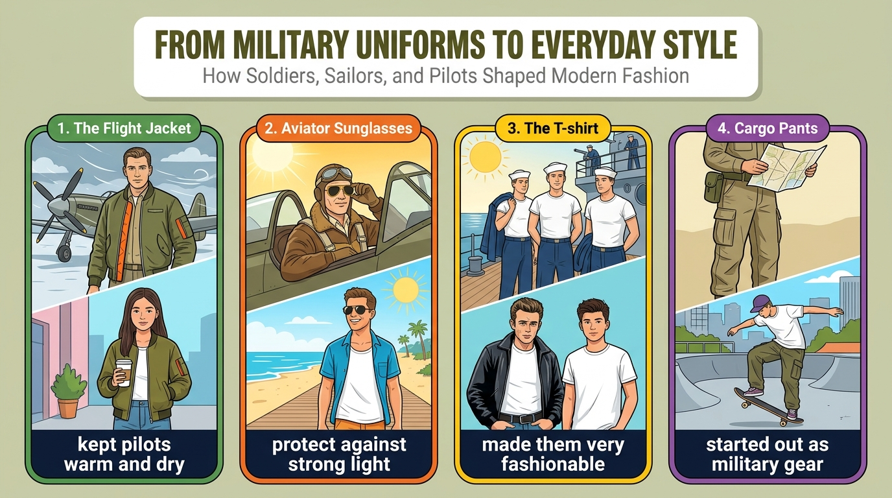

飛行夾克、工作褲在年輕人間很流行；有人認為無害，也有人覺得傳達了錯誤訊息。
while others believe ...這些衣服原本為軍人設計，寬鬆剪裁與額外口袋很實用；墨鏡至今仍能抵擋強光。
loose fit and extra pockets批評者擔心軍裝風讓戰爭看起來很酷，年輕人在網路上看到後會忘記戰爭的代價。
make war look cool穿 T 恤不等於支持戰爭；軍事史對衣櫃影響重大，我們該了解單品背後的故事。
learn the stories behind these itemsMilitary-style clothes (S) + are (V) + popular (C)。
Military-style clothes（主詞）such as bomber jackets and cargo pants（舉例介片）are now popular among young people.（連綴動詞＋補語＋範圍）語塊 2（像飛行夾克和工作褲這類的，提前）➔ 語塊 1（軍裝風服飾）➔ 語塊 3（如今在年輕人之間很流行）
主詞後有舉例，我們合併：「像飛行夾克和工作褲這類的軍裝風服飾」。
such as bomber jackets and cargo pants 是舉例介片，修飾主詞 clothes，不是子句。主幹 Military-style clothes are now popular，among young people 說明在誰之間流行。
be popular among / with sb：受某人歡迎。Some people (S) + think (V) + (that) 子句；子句二 others (S) + believe (V) + (that) 子句。
Some people think this trend is harmless,（子句一（省略 that））while others believe（while 對比子句）it sends the wrong message.（名詞子句（省略 that））語塊 1（有些人認為這股潮流無傷大雅）➔ 語塊 2（也有人卻認為）➔ 語塊 3（它傳達了錯誤的訊息）
前半句順翻「有些人認為這股潮流無傷大雅」。
think 和 believe 後面都直接接子句，省略了名詞子句的 that。
while＝whereas（對比）。Some people think ..., while others believe ...these clothes (S) + are (V) + practical (C)，because 子句說明原因。
On the one hand,（正方轉折語）these clothes are practical（主幹）because they were originally made for soldiers, sailors, and pilots.（because 子句）語塊 1（一方面）➔ 語塊 2（這些衣服很實用）➔ 語塊 3（因為它們原本就是為軍人製作的）
On the one hand 先翻「一方面」，正方論點開始。
On the one hand 帶出正方論點；because 右邊 they were originally made for ... 是完整子句，說明為什麼實用。
On the one hand ... On the other hand ...：正反論證架構。be made for sb：為某人製作。Their loose fit and extra pockets (S) + make (V) + them (O) + comfortable (OC)。
Their loose fit and extra pockets（主詞（兩個名詞並列））make them comfortable（make＋O＋adj.）for daily life.（用途介片）語塊 1（寬鬆的剪裁和額外的口袋）➔ 語塊 2 前半（讓它們）➔ 語塊 3（在日常生活中，提前）➔ 穿起來很舒適
主詞是兩個特色，先翻「寬鬆的剪裁和額外的口袋」。
Their loose fit and extra pockets（兩個名詞，複數），動詞用 make；them 是受詞，comfortable 是受詞補語。
fit（n.）剪裁：a loose / tight fit。make + O + adj.：make it easy／make them comfortable。aviator sunglasses (S) + still protect (V) + our eyes (O)。
, which a company introduced in the 1930s, 非限定受格關代；just as 比較子句。
Moreover, aviator sunglasses,（遞進＋主詞）which a company introduced in the 1930s,（非限定受格 which 子句）still protect our eyes against strong light（主幹）just as they did for early pilots.（just as 比較子句）語塊 1（此外）➔ 語塊 2（1930 年代由一家公司推出的，提前）＋飛行員墨鏡 ➔ 語塊 3（至今仍能保護我們的眼睛不受強光傷害）➔ 語塊 4（就像當年保護早期飛行員一樣）
Moreover 先翻「此外」，主詞後面夾著 which 子句。
aviator sunglasses，右邊 a company introduced in the 1930s 有主詞、缺受詞 ➔ 受格關代；非限定用法不能省略 which。just as they did for early pilots：did 代替 protected eyes，避免重複。
He runs faster than I do.some critics (S) + say (V) + that 子句 (O)。
On the other hand,（反方轉折語）some critics say that（主句＋that）military fashion may make war look cool.（名詞子句（使役＋連綴動詞））語塊 1（另一方面）➔ 語塊 2（有些批評者指出）➔ 語塊 3（軍裝時尚可能讓戰爭看起來很酷）
On the other hand 翻「另一方面」，反方論點開始。
say ➔ 名詞子句。make war look cool：使役動詞 make 後接受詞＋原形動詞 look（不加 to），look 又是連綴動詞，後接形容詞 cool。
make / let / have + O + 原形 V。On the other hand, some critics say that ...They (S) + worry (V) + that 子句 (O)。
who come across these styles online 修飾 young people。
They worry that（主句＋that）young people who come across these styles online（子句主詞＋who 子句）may forget the real cost of fighting.（子句動詞＋受詞）語塊 1（他們擔心）➔ 語塊 2（在網路上看到這些風格的年輕人）➔ 語塊 3（可能會忘記戰爭的真正代價）
They worry that 先翻「他們擔心」。
worry ➔ 名詞子句。young people 後接 who come across these styles online（缺主詞 ➔ 主格關代）；who 子句結束後的 may forget 才是 that 子句的動詞。
the cost of war：戰爭的代價。worry that ...＝be worried that ...。wearing a T-shirt (S) + does not mean (V) + supporting war (O)。
In my opinion,（立場片語）wearing a short-sleeved T-shirt from the navy's history（動名詞主詞）does not mean supporting war.（動詞＋動名詞受詞）語塊 1（在我看來）➔ 語塊 2（穿一件源自海軍歷史的短袖 T 恤）➔ 語塊 3（並不代表支持戰爭）
In my opinion 先翻「在我看來」，這是作者立場。
wearing a short-sleeved T-shirt from the navy's history 是動名詞片語，視為單數，所以用 does not mean；受詞 supporting war 也是動名詞。mean＋V-ing 表「意味著」。
mean + V-ing：意味著；mean to V：打算。In my opinion, A does not mean B.Fashion (S) + often starts out (V) + as something useful，再接 and later gains。
Fashion often starts out as something useful（主幹一（start out as））and later gains a new meaning.（並列動詞）語塊 1（時尚往往起初是實用的東西）➔ 語塊 2（後來才有了新的意義）
主幹順翻「時尚往往起初是實用的東西」。
starts out as something useful、右邊 later gains a new meaning，共用主詞 Fashion。something useful：something 的形容詞放後面。
something + adj.：something new／something useful。start out as＝begin as。military history (S) + has had (V) + a significant influence (O)；子句二 we (S) + should learn (V) + the stories (O)。
Still,（轉折副詞）military history has had a significant influence on our closets,（子句一）so we should learn（so 結果子句）the stories behind these items.（受詞＋後位修飾）語塊 1（儘管如此）➔ 語塊 2（軍事史對我們的衣櫃影響重大）➔ 語塊 3（所以我們應該了解）➔ 語塊 4（這些單品背後的故事）
句首 Still 翻「儘管如此」，承接上一句的讓步。
Still 句首加逗號，表「儘管如此」。so 左邊 military history has had a significant influence on our closets（原因），右邊 we should learn the stories ...（結果／建議），兩邊各有主詞動詞。
Still, 句首：儘管如此。..., so we should ...take (V) + a moment (O)；前接 the next time 子句。
with a military look 修飾 something；where 名詞子句。
The next time you buy something with a military look,（the next time 時間子句）take a moment to think about（祈使句）where it came from.（where 名詞子句）語塊 1（下次你買軍裝風的單品時）➔ 語塊 2（花點時間想想）➔ 語塊 3（它從何而來）
The next time 子句先翻「下次你買軍裝風的單品時」。
The next time you buy ...：the next time 本身是連接詞，不加 when，子句用現在式。where it came from 當 think about 的受詞，是間接問句，語序是主詞在動詞前。
take a moment to V：花點時間……The next time you ..., take a moment to ...1. 請選出最適合填入 (1) 的字：
while（而）。2. 請選出最適合填入 (2) 的字：
pilots。3. 請選出最適合填入 (3) 的字：
make + O + Adj.。4. 請選出最適合填入 (4) 的字：
make + O + 原形 V：make war look cool。5. 請選出最適合填入 (5) 的字：
have an influence on。6. Wearing sunglasses can help ________ your eyes against harmful light.
protect A against B。7. The company plans to ________ a new line of jackets this winter.
introduce。8. These pants are too ________; I need a belt to keep them up.
loose（鬆）。9. The new policy brought a ________ improvement in students' grades.
significant improvement。10. 下列哪一句文法正確？
11. 「有些人喜歡夏天，而其他人喜歡冬天。」最佳英譯是：
while；others 複數用 like。12. 下列哪一句文法正確？
13. What is the purpose of the second paragraph?
14. What do critics worry about?
15. What is the writer's opinion?